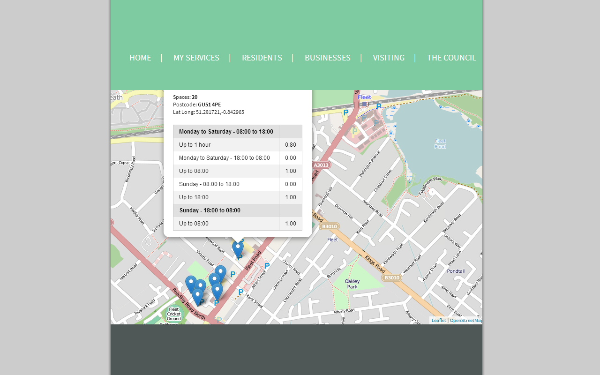

Bio
Work
Background in local government including change management, analysis, performance, policy, project management, procurement, planning and housing.
Passionate about innovation, social good, making sense of data and great coffee.
Languages
- CSS
- HTML
- Javascript
- JSON
- R
Tech preferences
- AngularJS
- jQuery
- Node.js
- MongoDB
- Ruby on Rails
Showcase

Delivering clearly presented analysis of a range of datasets in a coherent way
An evidence base for Hart's Housing Strategy

Using large open datasets to find trends and discover patterns
Crime in San Fran

Exploring ways to reinvent public services through data and open source
Hart District Council on GitHub